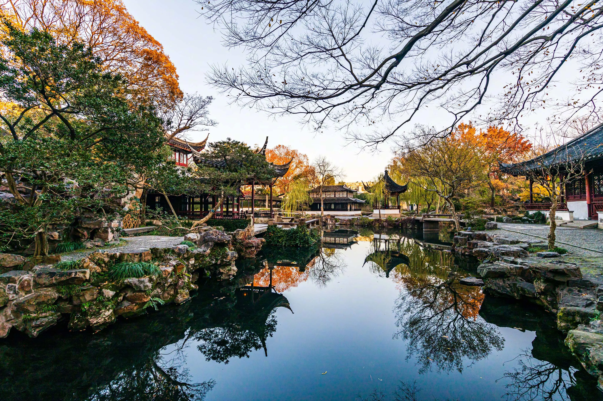

Suzhou gardens are world-famous. They are UNESCO World Heritage sites. Humble Administrator's Garden and Lion Grove Garden are the most popular ones.

| Garden Name | Built Dynasty | Main Feature | Brief Introduction |
|---|---|---|---|
| Humble Administrator's Garden | Ming Dynasty | Wide water landscape | The largest Suzhou garden, representative of Jiangnan gardens. |
| Lingering Garden | Ming Dynasty | Exquisite buildings, changeable space | Famous for its smart and delicate building layout. |
| Lion Grove Garden | Yuan Dynasty | Rockery stone maze | Famous for complicated rock caves and stone hills. |
| Canglang Pavilion | Song Dynasty | Quiet and simple style | The oldest one among the four famous gardens. |
Gardens use rocks, water, trees and pavilions to make quiet beautiful scenes.